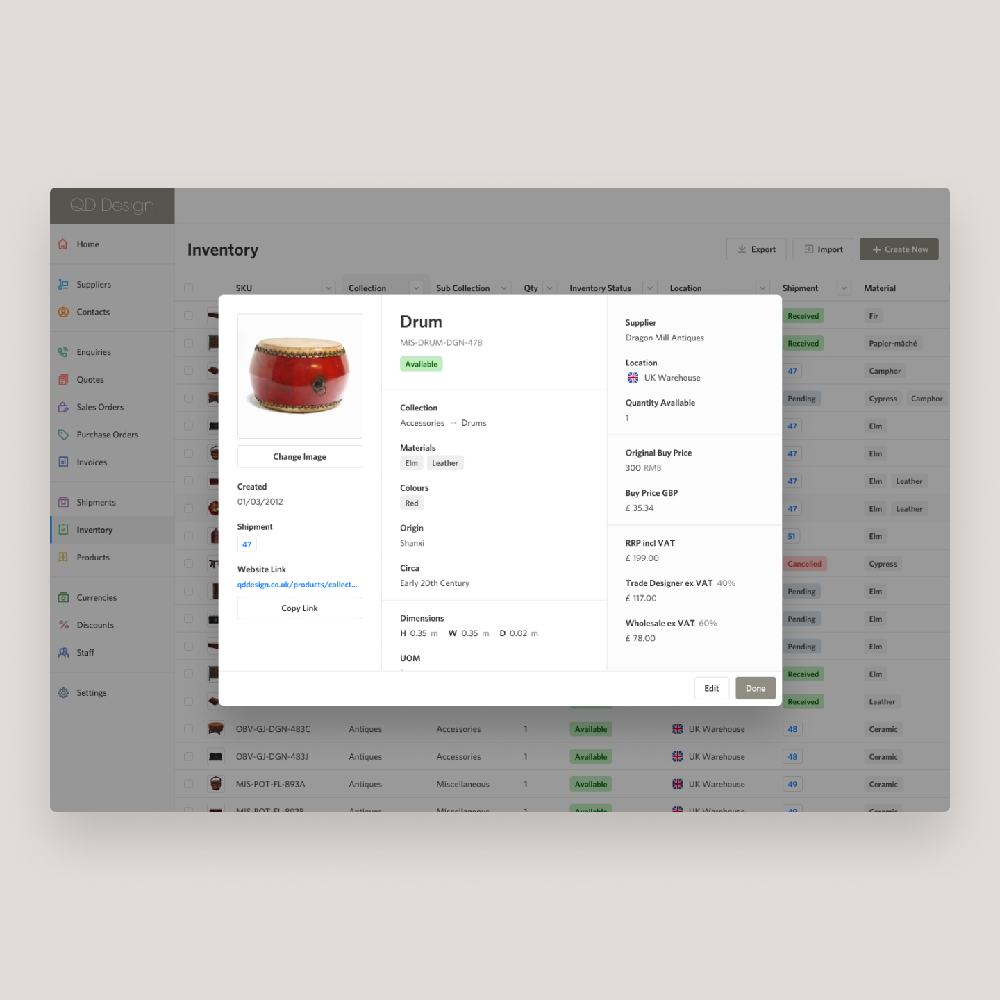
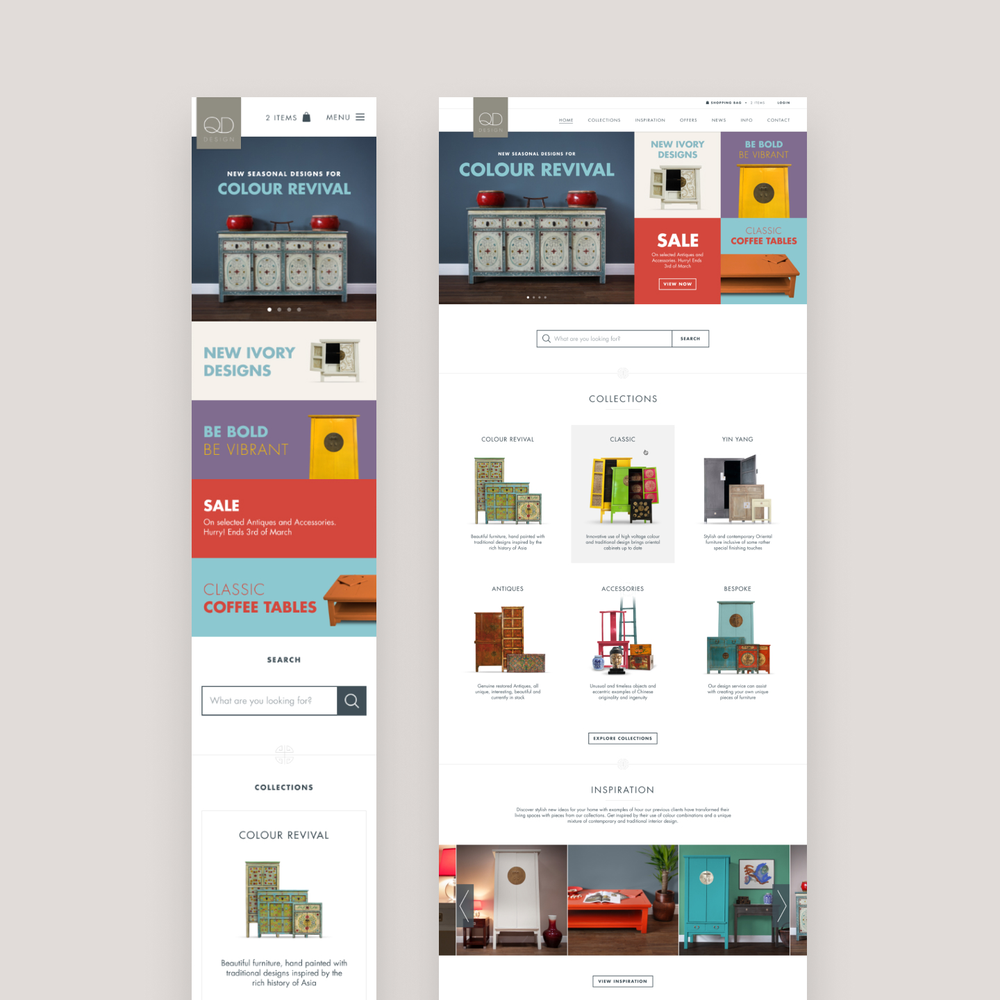
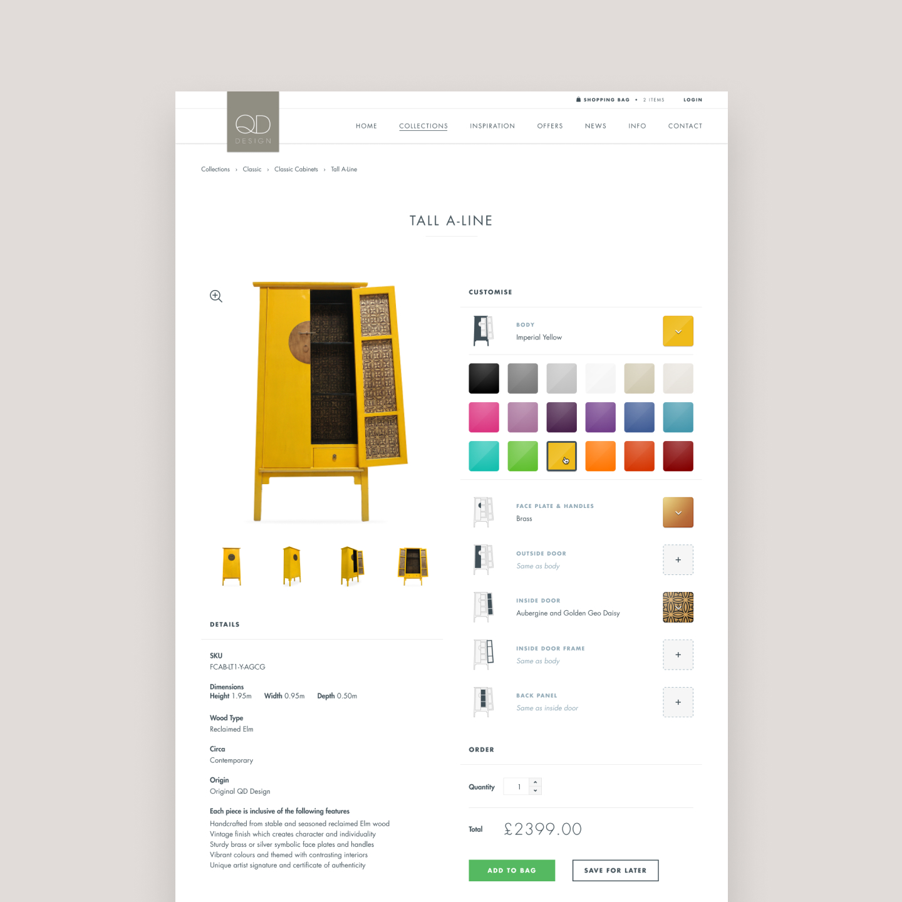
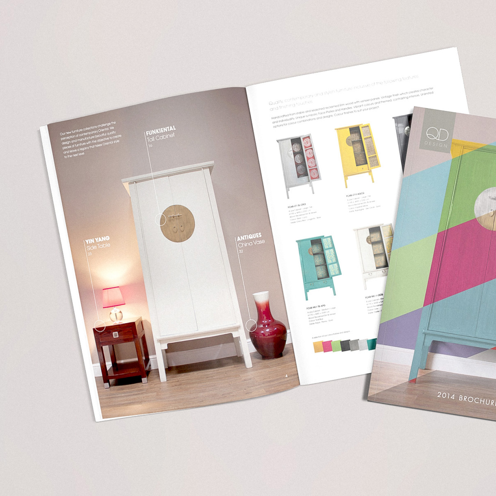
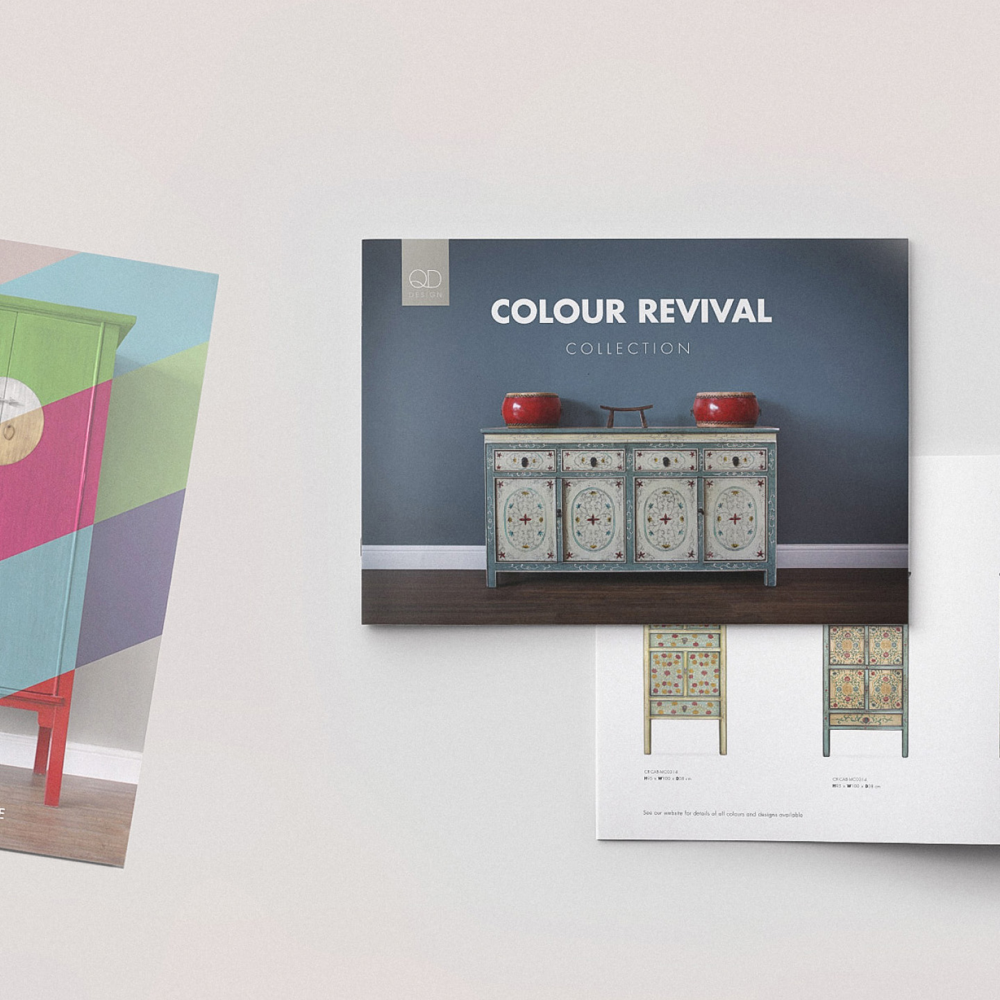
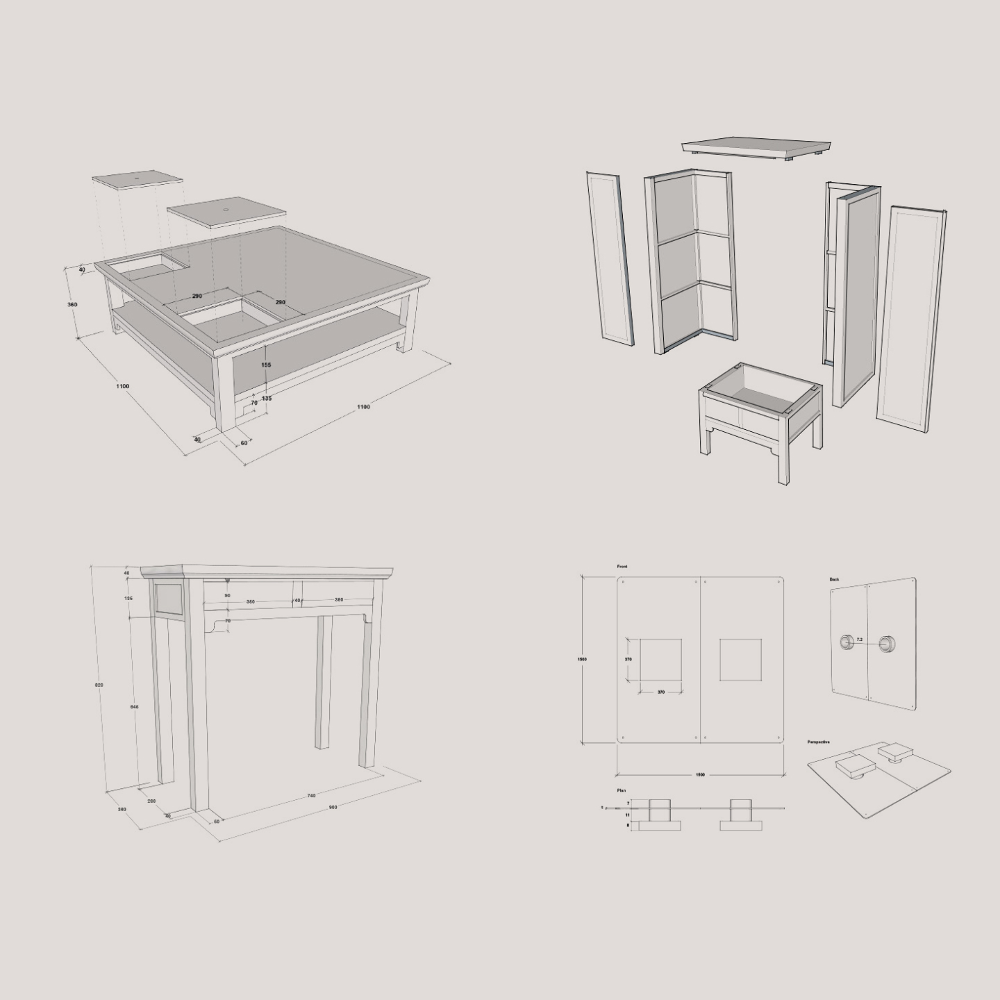

QD Design
UX design and front-end development to transition the business from trade-only to a B2B and B2C eCommerce model, significantly increasing sales and customer reach. Designed and built a bespoke inventory and warehouse management system, streamlining operations and improving efficiency across sales and logistics. Delivered rebranding across digital and print, including advertising, product photography, and 3D CAD design to support new product launches and market positioning resulting in 2.3x revenue growth






Overview
QD Design manufactured and sold Chinese antique-inspired revival furniture and imported antique Chinese homeware, decorations, and furniture through a site built years earlier as a classic ASP (VBScript) catalogue with a custom-coded admin tool bolted on the side. It could display products and take enquiries, but it could not sell anything. There was no cart, checkout, or basket anywhere in the site. I wanted to design and build its replacement and went with a WordPress site with WooCommerce stack (popular and easy to work with at the time) capable of running the retail operation the old one couldn't.
Tasks & responsibilities
Full-site rebuildOwned the project end to end: information architecture, theme design and build, plugin selection, product migration, and launch.
Ecommerce introductionSpecified and built the first online purchasing flow the business had ever had, carrying over the trade pricing behaviour its wholesale customers relied on.
CMS handoverReplaced the bespoke ASP admin panel with a WordPress and WooCommerce back end the client's own staff could use without touching code.
Theme developmentDesigned and coded a custom WordPress theme, built on Twenty Twelve, with dedicated WooCommerce template overrides to match the brand.
Project: migrating a bespoke catalogue into WooCommerce
Problem
The existing site was a working catalogue but a dead end for growth. It ran entirely in classic ASP, with every product edit going through pages like product_add.asp, product_edit.asp and product_delete.asp, a hand-built CMS with none of the plugin ecosystem, payment integrations, or security patching a modern platform gets for free. Customers could browse products, request a brochure, or apply for a trade account, but every purchase still happened off-site, by phone or through a trade relationship. That capped how much revenue the site itself could generate, and how easily the client could add or change products without calling a developer.
Goals
Real ecommerceGive customers the ability to actually buy on the site (cart, checkout, and payment) for the first time.
Self-service contentMove product and page management off a bespoke admin tool and onto a CMS the client's team could run themselves.
Preserve what workedCarry over the trade and wholesale pricing model that mattered to the business, without rebuilding it as another one-off system.
Don't over-buildSolve the same business problems with a proven, extensible open-source stack rather than a second bespoke platform.
Constraints & considerations
Legacy dataYears of product, category, and page content existed only inside the old ASP/SQL structure and had to be carried across, not re-entered from scratch.
Small business budgetNo scope for another custom-built checkout or admin system; the solution had to lean on off-the-shelf tooling to stay affordable and maintainable long-term.
Non-technical maintenanceWhatever replaced the ASP admin panel needed to be usable by the client directly, with no developer in the loop for day-to-day updates.
Approach & decisions
Platform choiceChose WordPress with WooCommerce over a custom build specifically because it came with a real ecosystem: page building, SEO, security, product import tooling, payment gateways, none of which existed in the original bespoke admin.
Bulk product migrationRather than re-entering the catalogue by hand, used CSV and XML import tooling to bring the existing product data across from the old system in bulk, keeping the migration accurate and fast.
Custom theme, not an off-the-shelf templateBuilt a bespoke child theme on Twenty Twelve rather than a generic WooCommerce theme, with custom template overrides for product and archive pages, so the storefront kept its own identity instead of looking like every other small WooCommerce store.
Search & discoveryAdded relevance-based product search, something the original site's search page never really delivered against a growing catalogue.
Operational tooling over bespoke codeFilled out the rest of the stack with focused, well-supported plugins rather than custom development: security hardening for a site now handling payments, automated backups, analytics, and dynamic pricing for the trade side of the business.
The stack
This is the plugin stack I settled on to cover the gaps left by the old bespoke admin panel, without building anything custom:
- WooCommerce
- WP All Import
- Relevanssi
- Dynamic Pricing
- Better WP Security
- BackupBuddy
Outcome & impact
First real online sales channelThe client went from a site that could only display products and take enquiries to one that could take a payment end to end: cart, checkout, and order management, all inside WooCommerce.
Independent content managementProduct and page updates moved from a bespoke admin panel only a developer could safely extend, to a dashboard the client's own staff could manage day to day.
Retained trade pricing modelThe wholesale pricing behaviour that mattered to the business carried through into the new platform, instead of being lost in the migration.
Reduced technical riskMoving off unsupported classic ASP and a single-purpose admin tool onto a platform with an active plugin ecosystem meant the client was no longer solely dependent on one developer to keep the site running or safe.
Direct-to-consumer growthThe number of customers buying directly from the site went up dramatically, with revenue increasing more than 3x. The company no longer had to rely on wholesalers, stockists, and flash-sale reseller sites, and could make more profit per item sold.
Marketing investmentThe business made enough money to hire a dedicated marketing person, who kicked off B2C sales with advertising that grew regular customer numbers by 10x.
Reflections & key takeaways
The hardest part wasn't moving the products across technically; it was deciding what from the old bespoke system was actually worth preserving, like trade pricing and category structure, versus what was only there because it had to be hand-built from scratch, like the entire admin panel.
For a small retail client, the win wasn't building something more custom than the original ASP site; it was replacing bespoke, single-developer infrastructure with an open, well-supported platform that could do more, more safely, for less ongoing cost. Introducing a cart and checkout wasn't just a technical feature addition; it was the first time the client's website could generate revenue directly, rather than existing purely as a digital brochure. And by moving to WooCommerce, the client picked up a platform that could keep growing through plugins and themes, rather than needing another full rebuild the next time the business's needs changed.